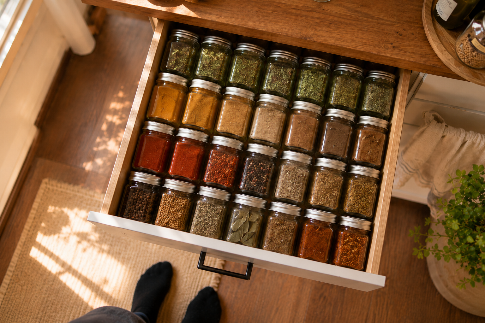

Hi, ich bin Lisa!
Ich liebe es, Räume zu vereinfachen und Routinen zu schaffen, die den Alltag leichter machen. Auf aufräumliebe findest du ehrliche Ideen, die in echte Wohnungen und Familienleben passen.

Du stehst am Herd, das Wasser kocht schon, und du durchsuchst zum dritten Mal dasselbe Regal, weil der Kreuzkümmel einfach nicht auftaucht. Kein hübscheres Regal löst das Problem – nur ein System, das dich in drei Sekunden zum richtigen Glas führt. Und dabei geht es um mehr als Sortieren: falsche Lagerung zerstört dein Aroma still und heimlich, jeden Tag ein bisschen mehr, ohne dass du es merkst.
🔒 Sicher & werbefrei – nur hilfreiche Inhalte
Einfach umsetzbar, sofort wirksam
Mehr Ordnung in jedem Raum
Für die schönen Dinge im Leben
Ideen, die dich wirklich weiterbringen
Ich liebe es, Räume zu vereinfachen und Routinen zu schaffen, die den Alltag leichter machen. Auf aufräumliebe findest du ehrliche Ideen, die in echte Wohnungen und Familienleben passen.
Mehr Tipps, mehr Inspiration, mehr Aufräumliebe.
🔒 Sicher & werbefrei – nur hilfreiche Inhalte